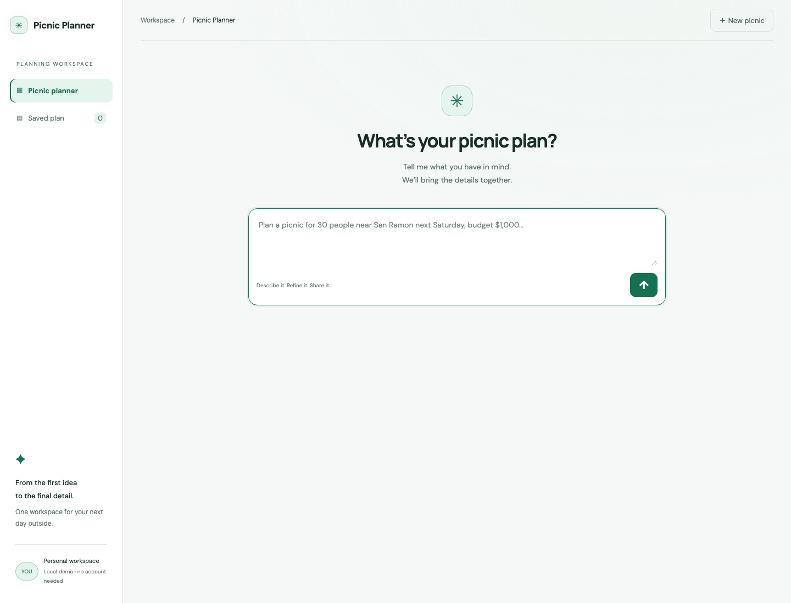
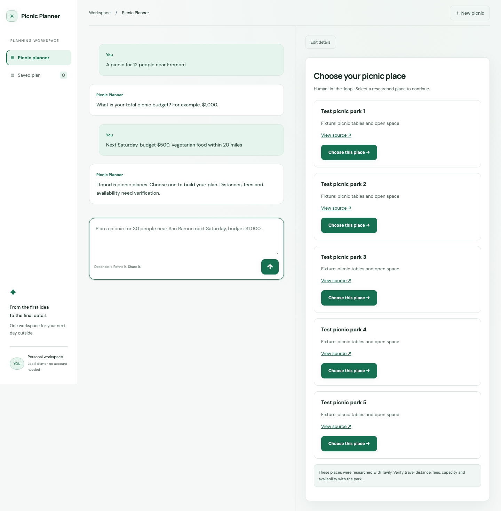
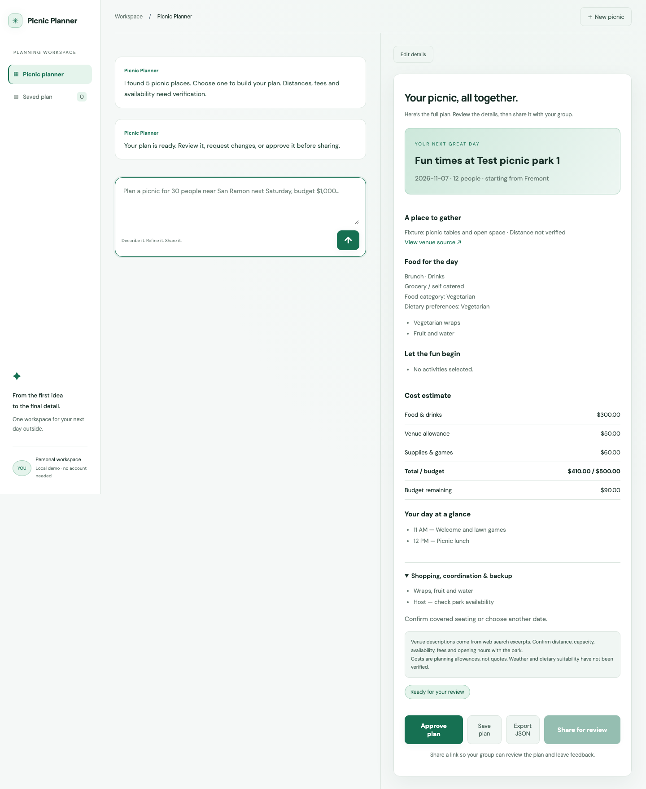
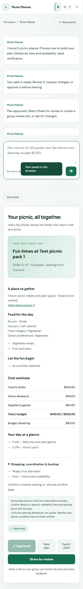

Picnic planning with human review.
LangGraph orchestration: details → place research → human selection → generated plan → approval → share.
These browser test captures use mocked Groq/Tavily responses and fixture places, not live research.



